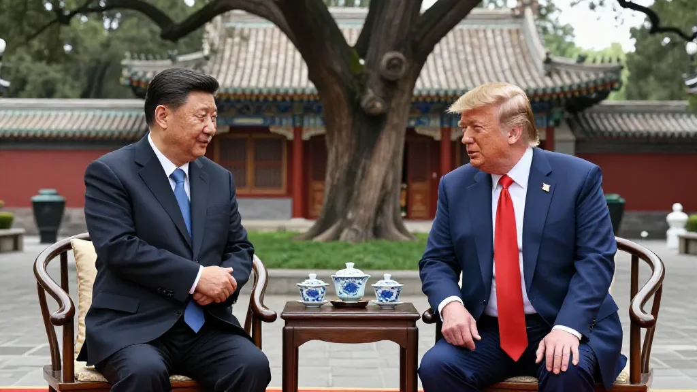
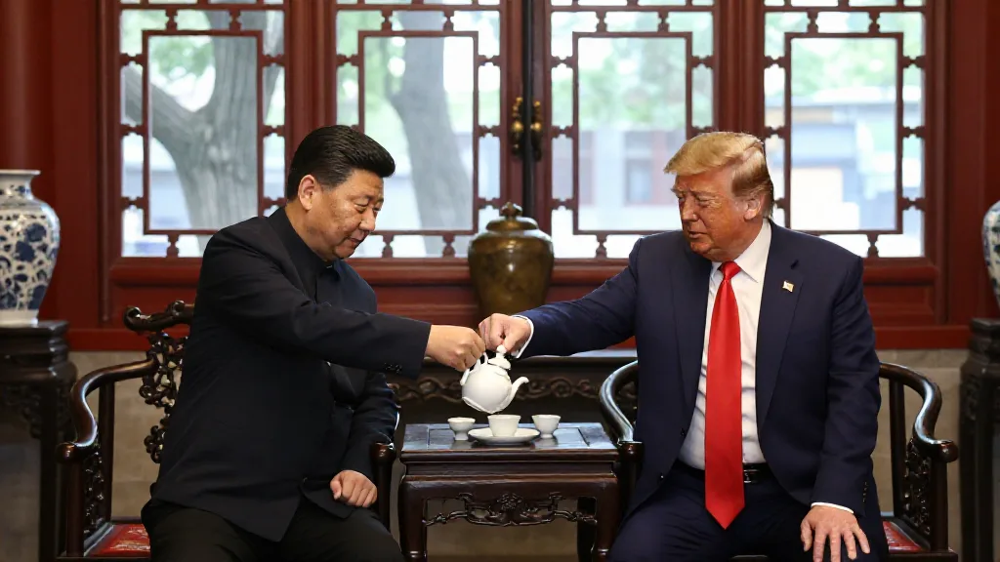
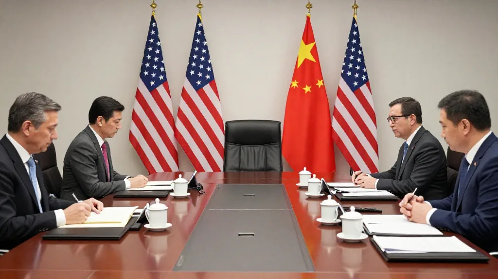

欄目：鄭哥博客點評｜日期：2026年10月2日｜關鍵詞：特朗普、習近平、中美關係、白宮峰會、天壇、鄭哥Hany、外銷、俄烏戰爭
第一幕：天壇廣場上，兩個老朋友再次握手
2026年9月24日，美國總統特朗普同國家主席習近在北京天壇廣場合照。
雨，霧，兩個超級大國的領導人並肩而行。
特朗普話：「能夠同你喺埋一齊係我嘅榮幸。」
呢句說話，喺2017年海湖莊園首次會面嗰陣，佢都講過。七年過去，兩個人都老了，但遊戲規則似乎冇變幾多。
我係做外銷出身，幫襯過唔同國家嘅客人。你問我特朗普係咪真心朋友習近平？我話你知：喺外交場上，「friend」呢個詞唔係用嚟形容感情，而係用嚟描述一種可以計算嘅關係。
天壇廣場上嗰張合照，背景係中國五千年文明，演員係兩個世界最大經濟體嘅掌舵人。導演？利益爾。

第二幕：中南海茶敘——回禮背後的精確計算
特朗普訪問最後一天，習近平做咗一件罕見嘅事：邀請特朗普進入中南海。
中南海，歷史上係中共中央領導人的官邸。據新華社報道，習近平話：「呢度以前好少搞外事活動，就算有，都好少有元首嚟過。」然後佢補充：「普京嚟過。」
翻譯：特朗普係第二個獲此待遇的美國總統，上一位係1975年嘅福特。
習近平選擇喺中南海茶敘，佢自己講得好清楚：係為咗回報特朗普2017年喺海湖莊園嘅款待。呢個係外交，一啲都唔係偶然。
佢哋一齊食晏，傾偈，欣賞百年古樹。特朗普話：「我好鍾意呢度，能待得慣。」
我回想我做外銷嘅日子：我請客戶食飯，帶佢哋參觀工廠，唔係因為我特別好人，而係因為我想建立一種信任關係，等佢下次落單嗰陣記得我。
國家之間嘅外交，都係同一個道理，只係遊戲規則更加大。

第三幕：峰會清單——有乜嘢傾成咗？
據白宮同新華社各自發布嘅會議紀要，雙方傾咗以下內容：
經濟層面：
- 貿易休戰期延長至2026年1月10日
- 中國進口美國商品關稅下調，幅度約300億美元
- 成立「貿易委員會」同「投資委員會」，監管雙邊投資
- 中美各自企業代表團都有到場（美方：馬斯克、黃仁勳、庫克）
地緣政治：
- 俄烏戰爭——雙方同意「保持溝通」
- 伊朗問題——白宮話「雙方一致認為伊朗永遠不能擁有核武器」
- 朝鮮半島局勢——有交換意見，但細節不詳
- 台灣問題——新華社版本多次提及，白宮版本完全冇提
外交訊號：
- 習近平邀請特朗普年底再訪中國（特朗普接受）
- 兩位領導人確認年內仲會喺APEC（深圳）和G20（邁阿密）兩次峰會見面

第四幕：台灣問題——沉默入面嘅聲音
如果要搵今次峰會最值得注意嘅事，我會話係台灣問題嘅處理方式。
新華社版本入面，習近平明確指出「台灣問題係中美關係中最重要嘅問題」，並且話「維護台海和平穩定係中美雙方最大公約數」。
白宮版本？完全冇提台灣。
特朗普喺天壇被記者追問台灣問題，兩次，零回應。
呢個說明乜嘢？說明台灣問題係中美之間一條劃得很清嘅紅線——雙方都唔想因為呢個議題搞到成個峰會崩盤，但係雙方都冇準備讓步。
美國國務卿盧比奧喺峰會前公開表示，美中經貿官員討論緊組建一個「貿易委員會」。財長貝森特話：「我哋嘅重點係實現平衡。」
我哋做外銷嘅人聽到「平衡」呢個詞就明：意思係你唔好預期我哋會跪低，但係大家都可以傾。

第五幕：77年過去了——點解外匯同外語一樣重要？
今年係中華人民共和國成立77週年。
77年前，毛澤東喺天安門城樓上話：「中國人民從此站起來了。」
77年後，習近平和特朗普喺天壇廣場上傾偘。
兩件事擺埋一齊，你會發現一個有趣嘅規律：中國越係強大，外交就越是需要「傾偈」。弱細係靠拳頭，強大先至靠談判。
我1998年開始做外銷，當時中國工廠靠低價搶單，外國客人係老闆，我哋係乙方。二十幾年過去，今日習近平和特朗普坐埋一張枱傾偈，唔係因為邊個心地好，而係因為中國已經大到美國唔可以忽視。
呢個對我哋做外銷嘅人有乜啟示？你自己實力夠，先至有人願意坐低同你傾。如果今日特朗普面對係一個1970年代嘅中國，傾都唔使傾。
鄭哥三句話
第一句：峰會就係高級sales meeting，雙方都係為自己嘅利益而傾。 特朗普話「可以成為習主席的朋友係我嘅榮幸」，呢句唔係客套話，而係一種姿態——表示我願意傾，但係我唔會跪低。做外銷嘅人都明白呢種語言。
第二句：台灣問題係中美之間一條劃得好清楚嘅紅線，但係雙方都選擇暫時避開。 呢個唔係因為問題解決咗，而係因為時機未到。外交嘅藝術，就係知道幾時要傾，幾時要等。
第三句：77年過去，今日中國有實力喺天壇廣場同一個美國總統並肩而行。 呢個唔係靠外人恩賜，而係靠自己幾代人打拚出嚟。我哋做外銷嘅，最明白呢個道理——你自己工廠實力夠，客人自然會尊重你。
一句話總結
特朗普習近平和天壇廣場握手，說明中美關係進入一個新階段——唔係盟友，但係可以傾偈；唔係friend，但係可以做生意。77年前靠拳頭，77年後靠談判。呢個就係實力變化嘅邏輯，冇花假。
想同鄭哥傾外銷生意？Want to talk trade with Hany?
📱 WhatsApp 香港：+852 6641 7912📱 WhatsApp HK: +852 6641 7912